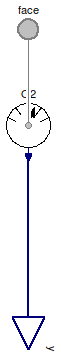
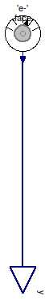
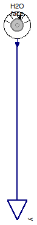

Table of Contents
- User's Guide
- BCs
- Sensors
- Assemblies
- Regions
- Subregions
- Connectors
- Characteristics
- Units
- Quantities
- BaseClasses
Download
- Latest: FCSys-2.0.zip (**Please check back soon or contact kdavies4 at gmail.com.)

| Name | Description |
|---|---|
| Sensor for gas | |
| Sensor for graphite | |
| Sensor for ionomer | |
| Sensor for liquid | |
| Base classes (not for direct use) |
 FCSys.Sensors.FaceBus.Phases.Gas
FCSys.Sensors.FaceBus.Phases.Gas
| Type | Name | Default | Description |
|---|---|---|---|
| Axis | axis | Axis.x | Axis normal to the face |
| Species | |||
| Boolean | inclH2 | false | Hydrogen (H2) |
| Species | H2 | Model | |
| Boolean | inclH2O | false | Water (H2O) |
| Species | H2O | Model | |
| Boolean | inclN2 | false | Nitrogen (N2) |
| Species | N2 | Model | |
| Boolean | inclO2 | false | Oxygen (O2) |
| Species | O2 | Model | |
| Type | Name | Description |
|---|---|---|
| FaceBus | face | Multi-species connector for linear momentum and heat |
| RealOutputBus | y | Bus of measurements |
model Gas "Sensor for gas" extends BaseClasses.NullPhase; // Conditionally include species. parameter Boolean inclH2=false "Hydrogen (H2)";Face.Species H2(final axis=axis) if inclH2 "Model"; parameter Boolean inclH2O=false "Water (H2O)";Face.Species H2O(final axis=axis) if inclH2O "Model"; parameter Boolean inclN2=false "Nitrogen (N2)";Face.Species N2(final axis=axis) if inclN2 "Model"; parameter Boolean inclO2=false "Oxygen (O2)";Face.Species O2(final axis=axis) if inclO2 "Model"; equation // H2connect(H2.face.normal, face.H2.normal); connect(H2.face.thermal, face.H2.thermal); connect(H2.face.transverseX, face.H2.transverseX); connect(H2.face.transverseY, face.H2.transverseY); connect(H2.face.transverseZ, face.H2.transverseZ); connect(y.H2, H2.y); // H2Oconnect(H2O.face.normal, face.H2O.normal); connect(H2O.face.thermal, face.H2O.thermal); connect(H2O.face.transverseX, face.H2O.transverseX); connect(H2O.face.transverseY, face.H2O.transverseY); connect(H2O.face.transverseZ, face.H2O.transverseZ); connect(y.H2O, H2O.y); // N2connect(N2.face.normal, face.N2.normal); connect(N2.face.thermal, face.N2.thermal); connect(N2.face.transverseX, face.N2.transverseX); connect(N2.face.transverseY, face.N2.transverseY); connect(N2.face.transverseZ, face.N2.transverseZ); connect(y.N2, N2.y); // O2connect(O2.face.normal, face.O2.normal); connect(O2.face.thermal, face.O2.thermal); connect(O2.face.transverseX, face.O2.transverseX); connect(O2.face.transverseY, face.O2.transverseY); connect(O2.face.transverseZ, face.O2.transverseZ); connect(y.O2, O2.y); end Gas;
FCSys.Sensors.FaceBus.Phases.Graphite
| Type | Name | Default | Description |
|---|---|---|---|
| Axis | axis | Axis.x | Axis normal to the face |
| Species | |||
| Boolean | 'inclC+' | false | Carbon plus (C+) |
| Species | 'C+' | Model | |
| Boolean | 'incle-' | false | Electrons (e-) |
| Species | 'e-' | Model | |
| Type | Name | Description |
|---|---|---|
| FaceBus | face | Multi-species connector for linear momentum and heat |
| RealOutputBus | y | Bus of measurements |
model Graphite "Sensor for graphite" extends BaseClasses.NullPhase; // Conditionally include species. parameter Boolean 'inclC+'=false "Carbon plus (C+)";Face.Species 'C+'(final axis=axis) if 'inclC+' "Model"; parameter Boolean 'incle-'=false "Electrons (e-)";Face.Species 'e-'(final axis=axis) if 'incle-' "Model"; equation // Cconnect('C+'.face.normal, face.C.normal); connect('C+'.face.thermal, face.C.thermal); connect('C+'.face.transverseX, face.C.transverseX); connect('C+'.face.transverseY, face.C.transverseY); connect('C+'.face.transverseZ, face.C.transverseZ); connect(y.C, C.y); // e-connect('e-'.face.normal, face.'e-'.normal); connect('e-'.face.thermal, face.'e-'.thermal); connect('e-'.face.transverseX, face.'e-'.transverseX); connect('e-'.face.transverseY, face.'e-'.transverseY); connect('e-'.face.transverseZ, face.'e-'.transverseZ); connect(y.'e-', 'e-'.y); end Graphite;
FCSys.Sensors.FaceBus.Phases.Ionomer
| Type | Name | Default | Description |
|---|---|---|---|
| Axis | axis | Axis.x | Axis normal to the face |
| Species | |||
| Boolean | 'inclC19HF37O5S-' | false | Nafion sulfonate (C19HF37O5S-) |
| Species | 'C19HF37O5S-' | Model | |
| Boolean | 'inclH+' | false | Protons (H+) |
| Species | 'H+' | Model | |
| Boolean | inclH2O | false | Water (H2O) |
| Species | H2O | Model | |
| Type | Name | Description |
|---|---|---|
| FaceBus | face | Multi-species connector for linear momentum and heat |
| RealOutputBus | y | Bus of measurements |
model Ionomer "Sensor for ionomer" extends BaseClasses.NullPhase; // Conditionally include species. parameter Boolean 'inclC19HF37O5S-'=false "Nafion sulfonate (C19HF37O5S-)";Face.Species 'C19HF37O5S-'(final axis=axis) if 'inclC19HF37O5S-' "Model"; parameter Boolean 'inclH+'=false "Protons (H+)";Face.Species 'H+'(final axis=axis) if 'inclH+' "Model"; parameter Boolean inclH2O=false "Water (H2O)";Face.Species H2O(final axis=axis) if inclH2O "Model"; equation // C19HF37O5S-connect('C19HF37O5S-'.face.normal, face.'C19HF37O5S-'.normal); connect('C19HF37O5S-'.face.thermal, face.'C19HF37O5S-'.thermal); connect('C19HF37O5S-'.face.transverseX, face.'C19HF37O5S-'.transverseX); connect('C19HF37O5S-'.face.transverseY, face.'C19HF37O5S-'.transverseY); connect('C19HF37O5S-'.face.transverseZ, face.'C19HF37O5S-'.transverseZ); connect(y.'C19HF37O5S-', 'C19HF37O5S-'.y); // H+connect('H+'.face.normal, face.'H+'.normal); connect('H+'.face.thermal, face.'H+'.thermal); connect('H+'.face.transverseX, face.'H+'.transverseX); connect('H+'.face.transverseY, face.'H+'.transverseY); connect('H+'.face.transverseZ, face.'H+'.transverseZ); connect(y.'H+', 'H+'.y); // H2Oconnect(H2O.face.normal, face.H2O.normal); connect(H2O.face.thermal, face.H2O.thermal); connect(H2O.face.transverseX, face.H2O.transverseX); connect(H2O.face.transverseY, face.H2O.transverseY); connect(H2O.face.transverseZ, face.H2O.transverseZ); connect(y.H2O, H2O.y); end Ionomer;
FCSys.Sensors.FaceBus.Phases.Liquid
| Type | Name | Default | Description |
|---|---|---|---|
| Axis | axis | Axis.x | Axis normal to the face |
| Species | |||
| Boolean | inclH2O | false | Water (H2O) |
| Species | H2O | Model | |
| Type | Name | Description |
|---|---|---|
| FaceBus | face | Multi-species connector for linear momentum and heat |
| RealOutputBus | y | Bus of measurements |
model Liquid "Sensor for liquid" extends BaseClasses.NullPhase; // Conditionally include species. parameter Boolean inclH2O=false "Water (H2O)";Face.Species H2O(final axis=axis) if inclH2O "Model"; equation // H2Oconnect(H2O.face.normal, face.H2O.normal); connect(H2O.face.thermal, face.H2O.thermal); connect(H2O.face.transverseX, face.H2O.transverseX); connect(H2O.face.transverseY, face.H2O.transverseY); connect(H2O.face.transverseZ, face.H2O.transverseZ); connect(y.H2O, H2O.y); end Liquid;